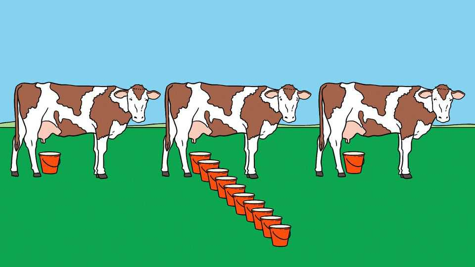
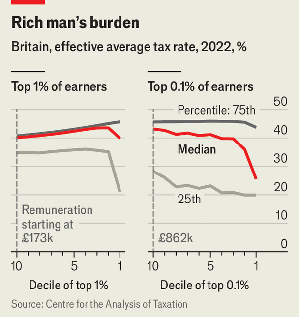

Britain overtaxes well-paid workers
To the benefit of average earners and the super-rich

Oct 1st 2026
At the heart of British politics lies a paradox. Tax is forecast to reach 38% of GDP by 2030-31, the highest level since the 1940s. Yet most British workers do not pay much of it. The average single earner in Britain pays less tax on their earnings than most of their peers in the OECD, a rich-country club. They also pay less than they used to. How does the Treasury make the sums add up?
For answers, look to Sue, Henry and Walter. Sue, a Standard Undertaxed Earner, is the median taxpayer, earning £18,700 ($23,100) in 2022. She wins from the current system. New research by Arun Advani, an economist, and his co-authors finds that her average effective tax rate fell from 17% to 12% between 2008 and 2022 (it will have since risen a bit due to stealthy recent tax rises).
Sue is able to enjoy high state spending only thanks to the contributions of her richer friends, Henry and Walter. The top 10% of taxpayers (earning over £51,000) in 2022 received 40.5% of taxable income but paid 60% of income-related taxes. The top 1% (over £173,000) paid an effective average rate of 36% on their remuneration, up from 33% in 2008.

Many politicians like to lump high earners together as “the rich”, a cash-cow that can be forever milked. But Henry and Walter are different people. Henry (High Earner, Not Rich Yet) is a put-upon professional in his 40s, and earns most of his crust through labour. He earns too much for free child care and too little to comfortably afford a family house in inner London. Walter (Wealthy Already, Lightly Taxed, Ever Richer) is a millionaire many times over. His income mostly comes through capital gains. With four nannies for his four homes, free child care doesn’t matter to him.
Dr Advani finds that Henry and Walter pay very different rates of tax. Half of the top 1% (often Henrys) paid effective tax rates close to the top rate of 47% in 2022. But among the top 0.01% (those with remuneration over £5m in 2022), half paid less than 30% and a quarter less than 20% (see chart). Walter’s secret is low capital-gains tax. The top marginal rate has risen since 2022 from 18% to 24%, but is still well below the 47% top rate for earnings.
The government, in a fiscal squeeze, is looking into capital-gains-tax rises in the budget on October 28th to balance the books. Done sensibly, with loopholes closed and new investment allowances to encourage savings, this could be a plausible revenue-raiser. But Walter is wily. Any government proposal will need to be watertight if it is to prevent capital flight or new forms of tax avoidance.
And therein lies Henry’s misfortune. Sue has the votes; Walter the accountants. Henry is too rich and too poor to count, so the taxes pile up on him. ■